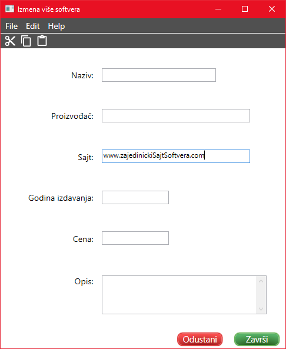

Izmena softvera
Prilikom izmena više softvera, nije potrebno popuniti sva polja, već samo ona koja želite da menjate.

Polje za naziv softvera treba da sadrži naziv softvera koji se unosi. Popunjavanjem ovog polja, svi označeni
softveri će imati isti naziv.
Proizvođač predstavlja proizvođača softvera koji se unosi. Ukoliko popunite ovo polje, svim označenim softverima
će se promeniti proizvođač
U polju za sajt se unosi sajt softvera. Ukoliko popunite ovo polje, svim označenim softverima
će se promeniti sajt.
Godina izdavanja predstavlja godinu izdavanja softvera. Broj koji se unosi za godinu mora biti pozitivan broj
veći od nula. Ukoliko popunite ovo polje, svim označenim softverima će se promeniti godina izdavanja.
Cena označava cenu softvera. Broj koji se unosi za cenu mora biti pozitivan broj veći od nula. Ukoliko popunite ovo polje, svim označenim softverima
će se promeniti cena.
U polju za opis se unosi opis softvera. Ukoliko popunite ovo polje, svim označenim softverima
će se promeniti opis.
Da bi podaci ostali sačuvani kliknite Završi ili prečicu Ctrl+S.
Ukoliko želite da odustanete od izmene, potrebno je kliknuti na Odustani ili prečicom na tastaturi
Ctrl+Q.
Link do početnog prozora za pomoć: Početna stranica